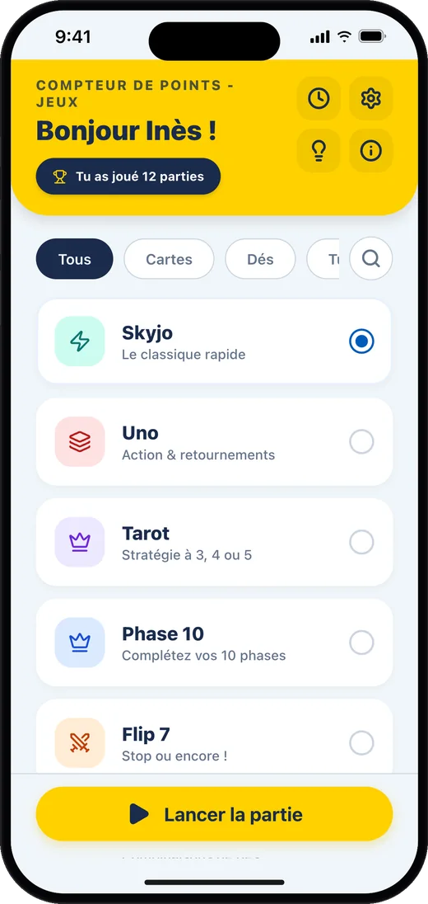
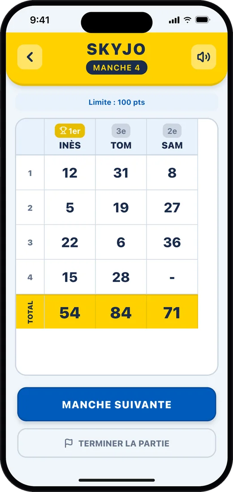
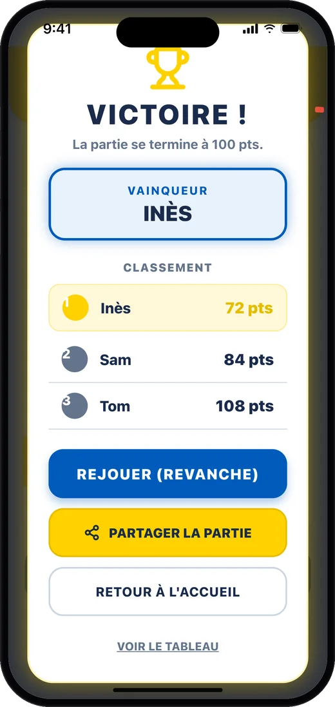

Fini les ratures, place au jeu
Ajoute les joueurs, saisis les points de chaque manche : l'appli fait les calculs et affiche le classement en direct. Plus de feuille perdue sous la table ni d'erreur d'addition.
Chaque jeu a son propre écran de saisie. Au Tarot, l'appli calcule les contrats, les bouts et les poignées ; au Yams, elle tient la feuille de marque complète.
Une partie de Skyjo dans l'appli



7 jeux dans une seule appli
- Skyjo : les points de chaque manche, avec une limite de fin de partie réglable.
- Tarot : contrats, bouts, petit au bout, poignées et chelem calculés à 3, 4 ou 5 joueurs.
- Yams : la feuille de marque complète : brelan, carré, full, suites, Yams, chance et bonus.
- Flip 7 : cartes, bonus et multiplicateurs ; le bonus Flip 7 s'ajoute tout seul.
- Uno : les points des cartes restantes après chaque manche.
- Phase 10 : la phase de chaque joueur et ses points de pénalité.
- Qwirkle : les points de chaque tour, Qwirkle compris.
Et aussi
- Classement en direct après chaque manche
- Reprise d'une partie en cours à tout moment
- Historique de toutes tes parties
- Partage du résultat en image
- Annonce des scores à voix haute
- En 7 langues
Comment ça marche
- Choisis ton jeu. Lance la partie en un geste et ajoute les joueurs autour de la table.
- Note chaque manche. Saisis les points de chacun en quelques secondes ; pour plusieurs jeux, l'appli fait le calcul à ta place.
- Découvre le vainqueur. Le classement se met à jour en direct et l'appli annonce le gagnant à la fin.
Questions fréquentes
L'appli est-elle gratuite ?
Oui, elle est gratuite avec des publicités. Une option « Sans pub » est proposée en achat intégré (1 an, 1 an avec soutien, ou à vie).
Ai-je besoin d'une connexion internet ?
Non pour compter les points : tes parties restent enregistrées sur ton téléphone. Les publicités ont besoin d'une connexion pour s'afficher.
Comment l'appli désigne-t-elle le vainqueur ?
Elle suit la règle du jeu choisi : au Skyjo, le total le plus bas gagne ; à l'Uno ou au Qwirkle, c'est le plus haut.
Il manque mon jeu préféré
Propose-le depuis l'appli ou écris-moi : de nouveaux jeux arrivent régulièrement.
Règles et démo de chaque jeu
Les règles résumées, le calcul des points et une démo interactive de l'appli pour chaque jeu sont sur compteurpoints.com.
Nous contacter
Une question, un bug, un jeu à ajouter ?
Écris à labasquelucas@gmail.com
Application non officielle, non affiliée aux éditeurs des jeux cités.